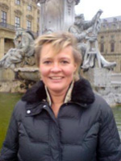
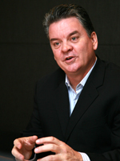

Keynote Speakers
Future Telecommunications and Broadcasting: Impact on Society
Prasit Prapinmongkolkarn
Abstract
Society has been evolving in some case gradually and in other case rapidly, depending on the influence of globalization, rapid technological development, cultural strength and the pace of socio-economic development of the country. As a result, cities and rural areas all face changes in various aspects in lifestyle, workplace, environment, social security, well-being and quality of life. If the society is not well prepared for the changes, then the society will go astray and become even worsen off.
This talk investigates the approaches and potential solutions that the future telecommunications and broadcasting technology can offer. These range from such infrastructure perspectives as smart grid and smart city to software aspects like social apps and social media. Interesting ideas are influenced by the course of rapid development in future telecommunications like NGN, future Internet and digital broadcasting HD/3D/4D technologies. With such a variety of solution technologies to be explored, in this talk, some of the common problems facing both the developed and developing countries, for example, emerging security risks and natural disaster concerns are highlighted and the issue of sustainable development is also addressed.
Prasit Prapinmongkilkarn
Prasit Prapinmongkolkarn obtained a Bachelor’s degree in Electrical Engineering from Chulalongkorn University and a Ph.D. in Communication Engineering from Osaka University, in 1969 and 1976, respectively. He was a professor at the Department of Electrical Engineering, Chulalongkorn University, teaching communication system, information theory and coding. He was the Chairman of The National Broadcasting and Telecommunications Commission (NBTC) an independent national regulator of Thailand. During his time in NBTC he has been working on universal service obligation (USO) and regulatory development relating to new technology deployment, dynamic spectrum allocation and telecommunications industrial research promotion.
He is currently a Professor Emeritus of Chulalongkorn University, a chair professor of Faculty of Engineering, Chulalongkorn University, an Honorary PhD. Degree recipient from King Mongkut's University of Technology Thonburi and he was recently awarded The Quality Man of The Year 2011 in Technology by Federation of Science & Technology Foundation, Ministry of Science and Technology Thailand. His area of research interests include Broadband Wireless Access, IP network, Self-Organizing Network, NGN and regulatory framework development. Apart from being the Chairman of NBTC; he was former President of Chulalongkorn University Intellectual Property Institute, Director of Chula Unisearch and also Bangkok Area Representative of IEICE, Japan.
He has been recently appointed as board member and Vice Chairman on the Information Technology and Communication Arts Committee of the National Research Council of Thailand (NRCT).
Global ICT Standardization
Gaby Lenhart
Abstract
ETSI, the European Telecommunications Standards Institute, is a non-for-profit organization and the standardization body for ICT (http://www.etsi.org/WebSite/homepage.aspx) recognized by the European Commission. All ETSI standards are globally applicable and freely downloadable from the internet for everybody, famous examples for such standards are GSM, UMTS, the DVB-family, DECT, TETRA and many others. ETSI has almost 800 member companies, universities and research institutes from all over the world and has been experiencing a growth in membership despite the difficult economic times. They all contribute to the standards development by direct participation and work based on consensus.
This talk will give an overview on the recently hot topics discussed in ETSI, such as QKD (Quantum Key Distribution), NFV (Network Functions Virtualization), LTN (Low Throughput Networks), ISI (Information Security Indicators), LIS (Localization Industry standards), AFI (autonomic networks), OEU (operational energy efficiency), etc. and will be addressed to various groups of stakeholders from industry as well as research.
ECTI-CON 2013 Keynote Speech by Gaby Lenhart: [Download]

Gaby Lenhart
Born 1964,
1983 -1987 study of electrical engineering with emphasis on communications electronics at the Technical University Vienna in parallel study of English and Russian as translator at the University Vienna
2001 - 04 study of ICSS (Intelligent Communication Systems and Services) at the Technikum Vienna.
Project Leader in the division ‘Network Building & Infrastructure at Max-Mobil Austria (now T-Mobile Austria)
2002 - 2005 Standardization Expert in the division „International Standardization at T-Mobile International; Head of Delegation, Chairman of OMA POC.
2005 - 2007 Project Leader for Smart Cards and Project Leader for eHealth at ETSI.
Currently Senior Research Officer at the Strategy & New Initiatives department at ETSI and, besides foresight, responsible for all aspects of quantum technologies.
The journey to the Cloud
Dave McClung

Dave McClung
DIRECTOR, APAC & China Cloud Solution Sales
SEAGATE TECHNOLOGY
Dave McClung is currently serving Seagate in the role of Director of Sales, APAC & China,
Cloud Business Solutions. Based in Singapore, Dave will run the strategy for sales as well as lead the coordination for the technical & engineering support of Seagate’s Cloud solution business for seven major Asean countries Plus India & China.
Prior to assuming this role, Mr. McClung has been working with over 75 Consumer Electronics OEM's, contract manufacturers and media companies, helping them to design and tool USM “Universal Storage Module” solutions into their products. These companies around the globe are implementing USM host slots in a wide variety of applications ranging from the PC to DVR, TV, NAS and security surveillance systems and building USM Storage Modules.
McClung has spent two decades in the hard drive business, working in sales and Director level positions at Hitachi, Maxtor & Seagate. McClung has been a key evangelist for a number of new technologies including SATA, SAS and the "Business Critical drive" segment as Business & large data centers moved from tape drives to high capacity hard disk drives.
At Maxtor and Seagate, Mr. McClung has led Sales teams to success with large North American CSP’s such as Google, Yahoo!, MSN & Amazon.
McClung also had a three year stint as director of WW Business Development for SYNNEX/Mitac Corp., working closely with major OEM's like Hewlett Packard/Compaq, SUN & SGI (Rackable Systems).
He holds a Bachelors degree from San Jose State University with an emphasis in Computer Science, Political Science and English. Graduating in 1988.
Conference Host

Important Dates
Full paper submission due date:
January 11, 2013 January 31, 2013
Notification of acceptance:
March 15, 2013 March 22,2013
Camera-ready paper submission:
April 2, 2013 April 17,2013
Early-bird registration:
April 2, 2013 April 17,2013
Conference date:
May 15-17, 2013